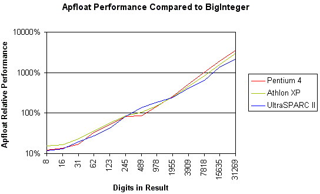
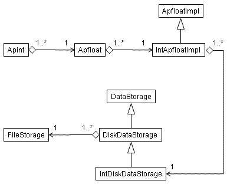
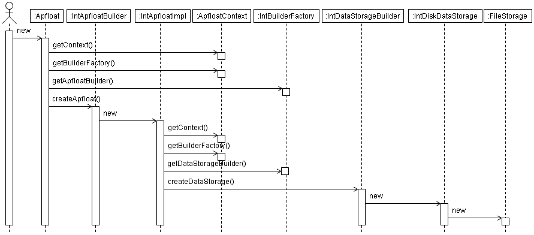
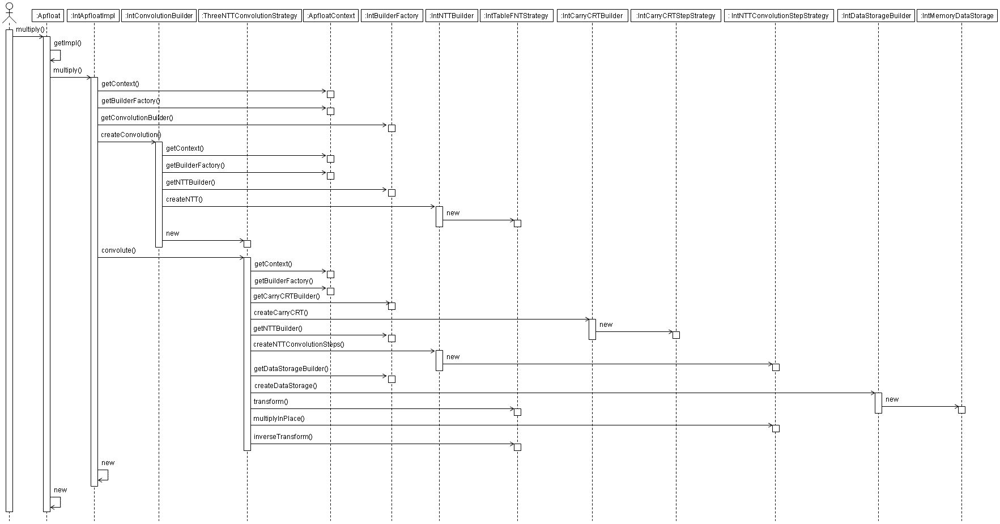

Package org.apfloat.internal
The org.apfloat.internal package contains four different
implementations of the apfloat SPI, each based on a different primitive
element type:
LongBuilderFactory, based on element typelong: This is the default implementation used by apfloat. It uses the 64-bitlonginteger as the elementary type for all data storage and manipulation. It usually is faster than theintversion on 64-bit JVMs, which is mostly the case today. In some places it uses alsodoublearithmetic, so the processor should be able to perform double-precision floating point operations as well as convert betweendoubleandlong, for decent performance. For example, on x86-64 and SPARC the 64-bitlongversion is faster than the 32-bitintversion. You can use thelongimplementation on 32-bit platforms too, however the performance per element is less than half of theintversion, even if roughly twice as much data is processed per element. The upside is that this implementation can do much bigger calculations: up to about 3.5 * 1015 digits in radix 10.IntBuilderFactory, based on element typeint: It works well for 32-bit platforms that perform integer operations fast (including integer multiplication), and can multiplydoubles and convert betweendoubleandintwith adequate performance. This applies to most workstations today (Intel x86 processors and compatibles, in particular processors with SSE2 support, and most RISC architectures). You can do calculations up to roughly 226 million digits (in radix 10) with this implementation, which should be enough for most purposes.DoubleBuilderFactory, based on element typedouble: This implementation exists generally only as a curiosity. It will typically perform worse than thelongversion, and it's only able to do calculations with about 1/20 of its maximum digit length. The only situation where using thedoubleversion might make sense is on a platform that performs floating-point arithmetic well, but performs integer arithmetic extremely badly. Finding such a platform today might be difficult, so generally it's advisable to use thelongversion instead, if you have a 64-bit platform or need the most extreme precision.FloatBuilderFactory, based on element typefloat: This version is also only a curiosity. The main downside is that it can only perform calculations up to about 1.3 million radix-10 digits. The per-digit performance is also typically less than that of theintversion. Unless you have a computer that performs floating-point arithmetic extraordinarily well compared to integer arithmetic, it's always advisable to use thelongorintversion instead.
| Type | Pentium 4 | Athlon XP | Athlon 64 (32-bit) | Athlon 64 (64-bit) | UltraSPARC II |
|---|---|---|---|---|---|
| Int | 100% | 100% | 100% | 100% | 100% |
| Long | 40% | 76% | 59% | 95% | 132% |
| Double | 45% | 63% | 59% | 94% | 120% |
| Float | 40% | 43% | 46% | 42% | 82% |
(Test was done with apfloat 1.1 using Sun's Java 5.0 server VM calculating π to one million digits with no disk storage.)
Compared to the java.math.BigInteger class with different digit
sizes, the apfloat relative performance with the same CPUs is as follows:

(Test was done with apfloat 1.1 using Sun's Java 5.0 server VM calculating 3n and converting the result to decimal.)
This benchmark suggests that for small numbers – less than roughly 200 decimal
digits in size – the BigInteger / BigDecimal classes
are probably faster, even by an order of magnitude. Using apfloats is only beneficial
for numbers that have at least a couple hundred digits, or of course if some
mathematical functions are needed that are not available for BigIntegers
or BigDecimals. The results can be easily explained by the smaller overhead
that BigIntegers have due to their simpler implementation. When the size
of the mantissa grows, the O(n log n) complexity of apfloat's FFT-based multiplication
makes apfloat considerably faster than the steady O(n2) implementation
of the BigInteger class. For numbers with millions of digits,
multiplication using BigIntegers would be simply unfeasible, whereas for
apfloat it would not be a problem at all.
All of the above apfloat implementations have the following features (some of the links
point to the int version, but all four versions have similar classes):
- Depending on the size, numbers can be stored in memory
(
IntMemoryDataStorage) or on disk (IntDiskDataStorage). - Multiplication can be done in an optimized way if one multiplicand
has size 1 (
IntShortConvolutionStrategy), using a simple O(n2) long multiplication algorithm for small numbers, with low overhead (IntMediumConvolutionStrategy), using the Karatsuba multiplication algorithm for slightly larger numbers, with some more overhead (IntKaratsubaConvolutionStrategy), or using a Number Theoretic Transform (NTT) done using three different moduli, and the final result calculated using the Chinese Remainder Theorem (ThreeNTTConvolutionStrategy), for big numbers. - Different NTT algorithms for different transform lengths: basic fast NTT
(
IntTableFNTStrategy) when the entire transform fits in the processor cache, "six-step" NTT when the transform fits in the main memory (SixStepFNTStrategy), and a disk-based "two-pass" NTT strategy when the whole transform doesn't fit in the available memory (TwoPassFNTStrategy).
ApfloatInternalException.
This exception, or various subclasses can be thrown in different situations, for
example:
- Backing storage failure. For example, if a number is stored on disk,
an
IOExceptioncan be thrown in any of the disk operations, if e.g. a file can't be created, or written to if the disk is full. - Operands have different radixes. This is a limitation allowed by the specification.
- Other internal limitation, e.g. the maximum transform length mathematically possible for the implementation, is exceeded.
*.ap
and they are by default created in the current working directory. When the objects
are garbage collected, the temporary files are deleted. However, garbage collection
may not work perfectly at all times, and in general there are no guarantees that
it will happen at all. So, depending on the program being executed, it may be
beneficial to explicitly call System.gc() at some point to ensure
that unused temporary files are deleted. However, VM vendors generally warn
against doing this too often, since it may seriously degrade performance. So,
figuring out how to optimally call it may be difficult. If the file deletion fails
for some reason, some temporary files may be left on disk after the program
exits. These files can be safely removed after the program has terminated.Many parts of the program are parallelized i.e. are processed with multiple threads in parallel. Parallelization is done where it has been easy to implement and where it is efficient. E.g. the "six-step" NTT is parallelized, because the data is in matrix form in memory and it's easy and highly efficient to process the rows of the matrix in parallel. Other places where parallelization is implemented are the in-place multiplication of transform results and the carry-CRT operation. However in both of these algorithms the process is parallelized only if the data is in memory - if the data was stored on disk then the irregular disk seeking could make the parallel algorithm highly inefficient.
Many sections of the code are not parallelized, where it's obvious that parallelization would not bring any benefits. Examples of such cases are addition, subtraction and matrix transposition. While parallel algorithms for these operations could certainly be implemented, they would not bring any performance improvement. The bottleneck in these operations is memory or I/O bandwidth and not CPU processing time. The CPU processing in addition and subtraction is highly trivial; in matrix transposition it's outright nonexistent - the algorithm only moves data from one place to another. Even if all the data was stored in memory, the memory bandwidth would be the bottleneck. E.g. in addition, the algorithm only needs a few CPU cycles per element to be processed. However moving the data from main memory to CPU registers and back to main memory needs likely significantly more CPU cycles than the addition operation itself. Parallelization would therefore not improve efficiency at all - the total CPU load might appear to increase but when measured in wall-clock time the execution would not be any faster.
Since the core functionality of the apfloat implementation is based on the
original C++ version of apfloat, no significant new algorithms have been
added (although the architecture has been otherwise greatly beautified e.g. by
separating the different implementations behind a SPI, and applying all kinds
of patterns everywhere). Thus, there are no different implementations for e.g.
using a floating-point FFT instead of a NTT, as the SPI (org.apfloat.spi)
might suggest. However the default implementation does implement all the
patterns suggested by the SPI – in fact the SPI was designed for the
default implementation.
The class diagram for an example apfloat that is stored on disk is shown below.
Note that all the aggregate classes can be shared by multiple objects that point
to the same instance. For example, multiple Apfloats can point to the same
ApfloatImpl, multiple ApfloatImpls can point to the same DataStorage etc. This
sharing happens in various situations, e.g. by calling floor(),
multiplying by one etc:

The sequence diagram for creating a new apfloat that is stored on disk is as follows. Note that the FileStorage class is a private inner class of the DiskDataStorage class:

The sequence diagram for multiplying two apfloats is as follows. In this case a NTT based convolution is used, and the resulting apfloat is stored in memory:

Most of the files in the apfloat implementations are generated from templates
where a template tag is replaced by int/long/float/double or
Int/Long/Float/Double. Also the byte size of the element type is
templatized and replaced by 4/8/4/8. The only files that are individually
implemented for each element type are:
BaseMath.java CRTMath.java ElementaryModMath.java ModConstants.java
- See Also:
org.apfloat.spi
-
Interface SummaryInterfaceDescriptionConstants needed for various algorithms for the
doubletype.Constants needed for various modular arithmetic operations for thedoubletype.Constants related to different radixes for thedoubledata type.Constants needed for various algorithms for thefloattype.Constants needed for various modular arithmetic operations for thefloattype.Constants related to different radixes for thefloatdata type.Constants needed for various algorithms for theinttype.Constants needed for various modular arithmetic operations for theinttype.Constants related to different radixes for theintdata type.Constants needed for various algorithms for thelongtype.Constants needed for various modular arithmetic operations for thelongtype.Constants related to different radixes for thelongdata type.Any task that can use aParallelRunnerto execute operations in parallel. -
Class SummaryClassDescriptionAbstract base class for creating convolutions of suitable type for the specified length.Abstract base class for a data storage creation strategy.Abstract base class for creating Number Theoretic Transforms suitable for the specified length, based on available memory configured in the
ApfloatContext.Abstract superclass for step-based FNT strategies.Abstract base class for disk-based data storage, containing the common functionality independent of the element type.Creates additions for the specified radix and thedoubleelement type.Basic addition strategy for thedoubleelement type.Builder class for buildingApfloatImplimplementations with thedoubledata element type.Immutable apfloat implementation class for thedoubledata element type.Mathematical operations on numbers in a base.Factory class for getting instances of the various builder classes needed to build anApfloatImplwith thedoubledata element type.Creates carry-CRT related objects, for thedoubletype.Class for performing the final steps of a three-modulus Number Theoretic Transform based convolution.Creates convolutions of suitable type for thedoubletype.Basic arithmetic for calculating the Chinese Remainder Theorem.Default data storage creation strategy for thedoubledata type.Disk-based data storage for thedoubleelement type.Elementary modulo arithmetic functions fordoubledata.Steps for the factor-3 NTT.Convolution strategy using the Karatsuba algorithm.Creates matrix operations objects, for thedoubletype.Optimized matrix transposition methods for thedoubletype.Medium-length convolution strategy.Array access class based on adouble[].Memory based data storage implementation for thedoubleelement type.Modulo arithmetic functions fordoubledata.Creates Number Theoretic Transforms for thedoubletype.Steps of a three-NTT convolution for thedoubletype.Common methods to calculate Fast Number Theoretic Transforms in parallel using multiple threads.Functions to perform bit-reverse ordering ofdoubledata.Short convolution strategy.Fast Number Theoretic Transform that uses lookup tables for powers of n:th root of unity and permutation indexes.Fast Number Theoretic Transform strategy that uses lookup tables for powers of n:th root of unity and permutation indexes.Helper class for generating and caching tables of powers of the n:th root of unity.A transform that implements a 3-point transform on top of another Number Theoretic Transform that does transforms of length 2n.Creates additions for the specified radix and thefloatelement type.Basic addition strategy for thefloatelement type.Builder class for buildingApfloatImplimplementations with thefloatdata element type.Immutable apfloat implementation class for thefloatdata element type.Mathematical operations on numbers in a base.Factory class for getting instances of the various builder classes needed to build anApfloatImplwith thefloatdata element type.Creates carry-CRT related objects, for thefloattype.Class for performing the final steps of a three-modulus Number Theoretic Transform based convolution.Creates convolutions of suitable type for thefloattype.Basic arithmetic for calculating the Chinese Remainder Theorem.Default data storage creation strategy for thefloatdata type.Disk-based data storage for thefloatelement type.Elementary modulo arithmetic functions forfloatdata.Steps for the factor-3 NTT.Convolution strategy using the Karatsuba algorithm.Creates matrix operations objects, for thefloattype.Optimized matrix transposition methods for thefloattype.Medium-length convolution strategy.Array access class based on afloat[].Memory based data storage implementation for thefloatelement type.Modulo arithmetic functions forfloatdata.Creates Number Theoretic Transforms for thefloattype.Steps of a three-NTT convolution for thefloattype.Common methods to calculate Fast Number Theoretic Transforms in parallel using multiple threads.Functions to perform bit-reverse ordering offloatdata.Short convolution strategy.Fast Number Theoretic Transform that uses lookup tables for powers of n:th root of unity and permutation indexes.Fast Number Theoretic Transform strategy that uses lookup tables for powers of n:th root of unity and permutation indexes.Helper class for generating and caching tables of powers of the n:th root of unity.Creates additions for the specified radix and theintelement type.Basic addition strategy for theintelement type.Builder class for buildingApfloatImplimplementations with theintdata element type.Immutable apfloat implementation class for theintdata element type.Mathematical operations on numbers in a base.Factory class for getting instances of the various builder classes needed to build anApfloatImplwith theintdata element type.Creates carry-CRT related objects, for theinttype.Class for performing the final steps of a three-modulus Number Theoretic Transform based convolution.Creates convolutions of suitable type for theinttype.Basic arithmetic for calculating the Chinese Remainder Theorem.Default data storage creation strategy for theintdata type.Disk-based data storage for theintelement type.Elementary modulo arithmetic functions forintdata.Steps for the factor-3 NTT.Convolution strategy using the Karatsuba algorithm.Creates matrix operations objects, for theinttype.Optimized matrix transposition methods for theinttype.Medium-length convolution strategy.Array access class based on aint[].Memory based data storage implementation for theintelement type.Modulo arithmetic functions forintdata.Creates Number Theoretic Transforms for theinttype.Steps of a three-NTT convolution for theinttype.Common methods to calculate Fast Number Theoretic Transforms in parallel using multiple threads.Functions to perform bit-reverse ordering ofintdata.Short convolution strategy.Fast Number Theoretic Transform that uses lookup tables for powers of n:th root of unity and permutation indexes.Fast Number Theoretic Transform strategy that uses lookup tables for powers of n:th root of unity and permutation indexes.Helper class for generating and caching tables of powers of the n:th root of unity.Creates additions for the specified radix and thelongelement type.Basic addition strategy for thelongelement type.Builder class for buildingApfloatImplimplementations with thelongdata element type.Immutable apfloat implementation class for thelongdata element type.Mathematical operations on numbers in a base.Factory class for getting instances of the various builder classes needed to build anApfloatImplwith thelongdata element type.Creates carry-CRT related objects, for thelongtype.Class for performing the final steps of a three-modulus Number Theoretic Transform based convolution.Creates convolutions of suitable type for thelongtype.Basic arithmetic for calculating the Chinese Remainder Theorem.Default data storage creation strategy for thelongdata type.Disk-based data storage for thelongelement type.Elementary modulo arithmetic functions forlongdata.Steps for the factor-3 NTT.Convolution strategy using the Karatsuba algorithm.Creates matrix operations objects, for thelongtype.Optimized matrix transposition methods for thelongtype.Medium-length convolution strategy.Array access class based on along[].Memory based data storage implementation for thelongelement type.Modulo arithmetic functions forlongdata.Creates Number Theoretic Transforms for thelongtype.Steps of a three-NTT convolution for thelongtype.Common methods to calculate Fast Number Theoretic Transforms in parallel using multiple threads.Functions to perform bit-reverse ordering oflongdata.Short convolution strategy.Fast Number Theoretic Transform that uses lookup tables for powers of n:th root of unity and permutation indexes.Fast Number Theoretic Transform strategy that uses lookup tables for powers of n:th root of unity and permutation indexes.Helper class for generating and caching tables of powers of the n:th root of unity.MessagePasser<K,V>Message passing helper class for parallel codes.Returns an execution strategy using theParallelRunner.Execution strategy using theParallelRunner.Abstract class for aRunnablethat can be run in parallel by multiple threads.Class for runningParallelRunnableobjects in parallel using multiple threads.Convolution using three Number Theoretic Transforms and the CRT to get the final result, using multiple threads in parallel.Functions to perform bit-reverse ordering of data.Fast Number Theoretic Transform that uses a "six-step" algorithm to calculate a long transform more efficiently on cache-based memory architectures.Class for performing the final step of a three-modulus Number Theoretic Transform based convolution.Convolution using three Number Theoretic Transforms and the Chinese Remainder Theorem to get the final result.Fast Number Theoretic Transform that uses a "two-pass" algorithm to calculate a very long transform on data that resides on a mass storage device. -
Exception SummaryExceptionDescriptionException indicating some unexpected apfloat implementation specific error situation.Exception indicating a backing storage failure.Exception indicating a different implementation of the apfloat SPI being used in two operands of a calculation.Exception indicating a different radix being used in two operands of a calculation.Exception indicating that the "size" of the numbers used in a multiplication is too large.